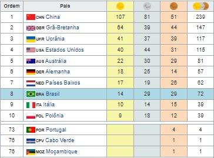

|
Jogos Paralímpicos de Verão de 2016, oficialmente Jogos da XV Paralimpíada, mais comumente Paralimpíada do Rio 2016, foi um evento multiesportivo para atletas com deficiência organizado pelo Comitê Paralímpico Internacional, realizado no Rio de Janeiro, Brasil, de 7 a 18 de setembro de 2016. Foi a primeira vez que os Jogos Paralímpicos foram sediados na América do Sul, na América Latina e em um país lusófono. Foi também a segunda vez que aconteceram no hemisfério sul, depois de Sydney 2000. Além disso, pela nona vez o Brasil sediou um grande evento multiesportivo.Esta edição teve a inclusão da paracanoagem e paratriatlo no programa esportivo. |
Modalidades→Atletismo→Bocha →Ciclismo →Estrada →Pista →Basquetebol em cadeira de rodas →Hipismo →Esgrima em cadeira de rodas →Futebol de cinco →Futebol de sete →Goalball →Judô →Levantamento de peso →Natação →Remo →Rugby em cadeira de rodas →Tênis em cadeira de rodas →Tênis de mesa →Tiro com arco →Tiro →Vela →Voleibol Medalhas |